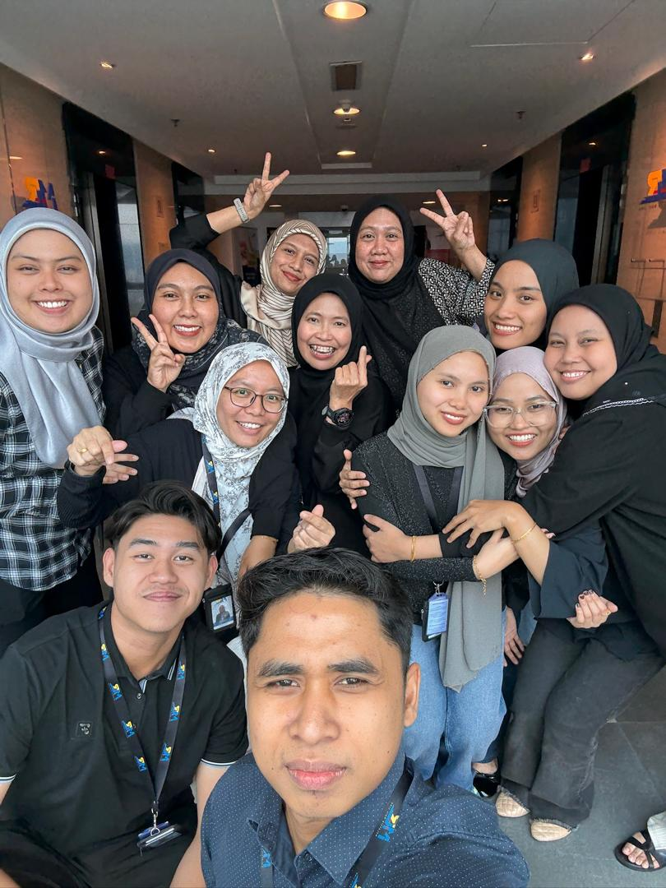

Experience & Internship
My professional journey showcasing internships, work experience, and the skills I've developed along the way.
28th July 2025 - 19th September 2025
A valuable internship experience working with the Quality Assurance/Quality Control department on a major infrastructure project.
Key Responsibilities:
- Assisted the Quality Assurance/Quality Control (QAQC) department in the documentation and organization of critical project records.
- Applied Diploma-level Records Management principles to ensure data accuracy and compliance within the project framework.
- Managed and maintained document control systems for engineering and construction documentation.
- Coordinated with multiple departments to ensure timely document submissions and approvals.

QAQC , IMS , QHSE - Technical Division

DC Team - QAQC Department

MRL Presentation - Internship Progress
Skills Developed:
Records Management
Quality Control Documentation
Project Coordination
Attention to Detail
Part-Time Grab Food Rider 🛵
Grab Food Delivery Services

Since 23rd February 2024 - Now
Ongoing part-time role demonstrating strong work ethic and customer service excellence.
Key Responsibilities:
- Developed exceptional time management and logistical planning skills by managing high-volume delivery routes efficiently.
- Maintained high-quality customer service during delivery interactions for a major food service platform.
- Consistently achieved excellent customer ratings through reliable and prompt service.
- Managed multiple simultaneous orders while maintaining accuracy and timeliness.

Grab Mask – Safety First

Grab Rider – Fast Delivery
Skills Developed:
Time Management
Customer Service
Route Optimization
Problem Solving
Looking for an Intern or Entry-Level Professional?
I'm actively seeking opportunities to apply my skills and continue growing professionally.
Contact Me